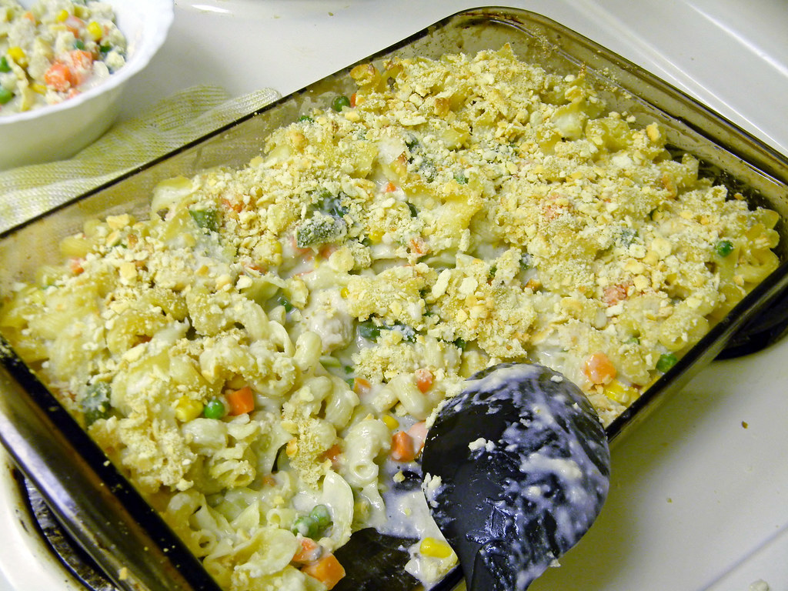

Home
Chicken Noodle Casserole

Description
Creamy chicken noodle casserole topped with crushed crackers. Wonderful as leftovers topped with melted cheese!
It has versatile toppings and mix-ins--like veggies and cheese. You can make it your own! Serves 6 people.
Ingredients
- 4 skinless, boneless chicken breast halves
- 6 ounces egg noodles
- 1 (10.5 ounce) can condensed cream of chicken soup
- 1 cup sour cream
- salt to taste
- ground black pepper to taste
- 1/2 cup butter
- 1 cup crumbled buttery round crackers
Steps
- Gather all ingredients. Preheat the oven to 350 degrees F (175 degrees C).
- Fill a large pot with water and bring to a simmer over medium heat.
Add chicken; poach in simmering water until no longer pink in center,
about 12 minutes. Use a slotted spoon to remove chicken from pot and set aside. Leave water in the pot.
- Bring chicken cooking water to a boil. Stir in egg noodles and cook until tender with a slight bite,
about 10 minutes. Drain.
- Transfer noodles to a large bowl. Cut chicken into bite-size pieces and mix with noodles.
- Mix together both condensed soups and sour cream in a separate bowl. Season with salt and pepper.
Add soup mixture to chicken mixture and gently stir until combined. Transfer to a 2-quart baking dish.
- Melt butter in a small saucepan over low heat and remove from heat. Stir in crumbled crackers.
- Sprinkle mixture over top of casserole. Sprinkle mixture over top of casserole.
- Bake in the preheated oven until heated through and browned on top, about 30 minutes.